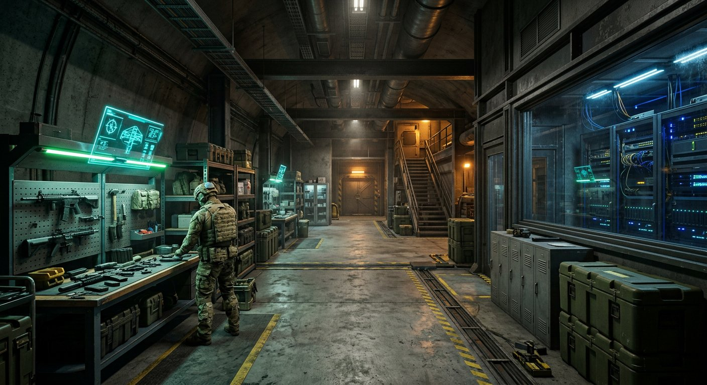
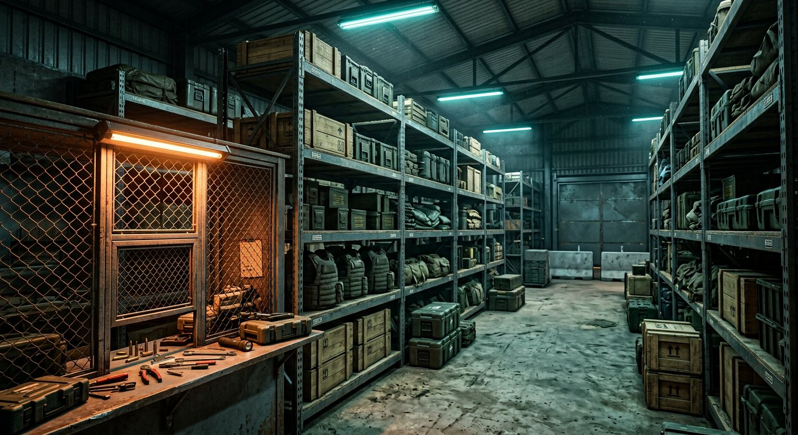
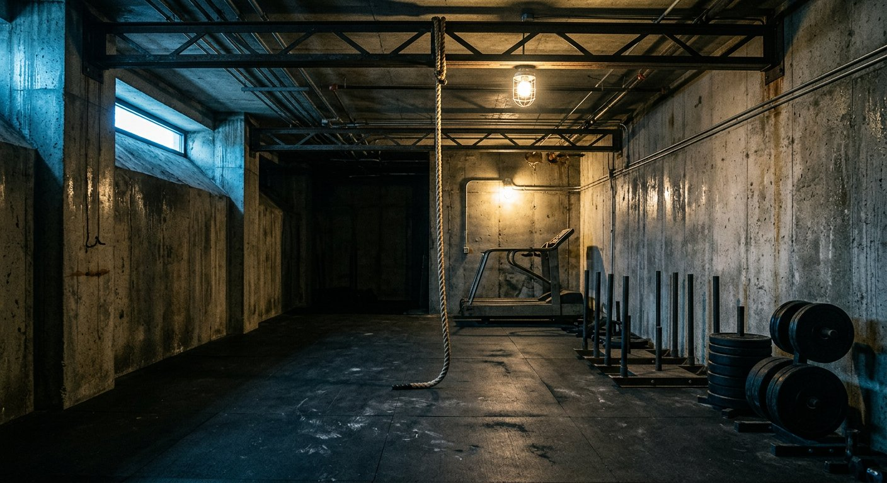

1
Stash (stockage)
On ne peut pas s'enrichir si l'on ne peut rien garder. Fondation de tout le reste.
Onze stations, un seul ordre optimal. Le Black Site est le vrai moteur de progression du mode extraction — et la première source de mauvais investissements.
Le stockage débloque tout le reste de l'économie.
Lève le plafond de niveau des autres stations + EXP et slots d'Hôtel des Ventes.
Revenu passif et autonomie en consommables/munitions.
Uniquement si AZ3 fait partie de votre rotation.
Optimisations de confort et de rendement.
Estimez l'effort restant avant votre prochain palier.
Estimation basée sur les paliers communautaires relevés le 12/11/2026 (th.gl). Les coûts exacts varient selon la saison : vérifiez en jeu avant d'engager vos Alloys.
Revenu et stockage avant les bonus de combat. Aucun ordre officiel n'a jamais été publié par le studio — c'est un consensus de la communauté, mais il est unanime.
On ne peut pas s'enrichir si l'on ne peut rien garder. Fondation de tout le reste.
XP de partie et emplacements de vente à l'hôtel des ventes : les deux se composent directement en revenu.
Fabriquer accessoires, armures et consommables au lieu de les acheter.
Munitions de rareté supérieure, rentable une fois la méta d'arme stabilisée.
Endurance, vitesse au sol et capacité de charge. Confort, une fois l'économie saine.
Situationnel : uniquement si vous farmez AZ3. Paliers aux niveaux Operations 9, 14 et 27.
Le Black Site peut générer plus d'Alloys qu'un raid, sans jamais quitter la base.
Stockage
Effet : Augmente le nombre de slots de stockage permanents.
Pourquoi : Priorité absolue. Sans place, on est forcé de vendre du butin de valeur à perte ou de le laisser derrière. Tout le reste du jeu dépend de cette station.
⚑ Améliorer jusqu'au palier confortable avant de toucher à quoi que ce soit d'autre.
Progression
Effet : Débloque et plafonne les niveaux des autres stations, augmente l'EXP Operations et les slots de l'Hôtel des Ventes.
Pourquoi : Gate technologique de toute la base : c'est lui qui autorise les niveaux supérieurs partout ailleurs.
Production
Effet : Produit des composants électroniques et des objets technologiques de valeur.
Pourquoi : Un des meilleurs retours sur investissement en production passive.
Production / Réparation
Effet : Fabrique et répare casques et gilets.
Pourquoi : Réparer au Black Site préserve mieux la durabilité maximale permanente qu'une réparation de terrain.
Production
Effet : Produit soins, stimulants et consommables médicaux.
Pourquoi : Alimente gratuitement chaque raid en consommables — économie directe à chaque sortie.
Production
Effet : Fabrique munitions, accessoires et composants d'armement.
Pourquoi : Produire ses munitions de niveau élevé coûte beaucoup moins cher que les acheter.
Utilitaire
Effet : Réduit les effets de la radiation, notamment sur AZ3 Nuclear Plant.
Pourquoi : Indispensable SI vous farmez AZ3, inutile sinon. Ne pas la rusher par réflexe.
Paliers : Operations Level 9, Operations Level 14, Operations Level 27
Utilitaire
Effet : Informations de raid, suivi de missions et bonus liés au renseignement.
Progression
Effet : Bonus d'expérience et d'entraînement d'opérateur.
Économie
Effet : Améliore les flux de ressources et les capacités logistiques.
Infrastructure
Effet : Alimente les autres stations et conditionne leurs niveaux supérieurs.
| Niveau | EXP Operations | Slots Hôtel des Ventes |
|---|---|---|
| 1 | +0% | +0 |
| 2 | +1% | +2 |
| 3 | +2% | +4 |
| 4 | +2% | +6 |
| 5 | +3% | +8 |
| 6 | +4% | +10 |
Coût d'entrée AZ3 Normal : 112 500 Tekniq Alloys

Operations repose sur quatre piliers : le Stash, les Départements, le Black Site et le Gunsmith. Les départements sont le plus discret des quatre, et celui qui débloque tout le reste. Chacun monte jusqu'au niveau 4, et chaque palier ouvre de nouveaux objets à l'achat en Supply Station — ainsi que des améliorations du Black Site qui exigent un niveau de département précis. Ignorer cet arbre, c'est plafonner volontairement.

Une chaîne de missions économiques qui jalonne toute la progression : 2 millions, puis 10, puis 25, puis 50 millions de Havoc Coins accumulés. Elle se remplit passivement si vous jouez l'économie correctement — et elle récompense exactement le comportement que le mode veut encourager : extraire, revendre, réinvestir.
Lisez vos missions de département AVANT de lancer une partie, pas après. La moitié se remplit en modifiant légèrement votre itinéraire.
Beaucoup de missions demandent des objets précis à rapporter : notez-les, et n'alimentez pas le marchand avec ces objets par réflexe.
Montez en priorité le département qui débloque la station de Black Site qui vous bloque. La progression n'est pas linéaire : elle est circulaire.
Les niveaux 1 et 2 tombent presque tout seuls. Les niveaux 3 et 4 demandent de la planification : réservez-leur des runs dédiés.
C'est la seule amélioration du Black Site qui vous donne un avantage DANS la partie. L'endurance supplémentaire change tout : vous traversez la carte plus vite, vous atteignez les zones de butin avant les autres, et vous pouvez jouer plus agressivement parce que vous avez toujours de quoi décrocher.
Montez-les au niveau 3 et fabriquez de l'armure et des munitions dorées en boucle. L'ordre de grandeur rapporté est d'environ 800 000 par cycle de 8 heures, dont à peu près 500 000 de profit net selon l'état du marché. Aucune autre station n'approche ce rendement.
Le niveau 2 débloque la réparation intermédiaire d'équipement, actuellement moins chère ET plus efficace que la réparation de base. C'est une économie permanente sur chaque sortie, pour un coût d'amélioration modeste.
Correct, mais il ne vous enrichira pas. Fabriquez-y les accessoires violets que vous utilisez réellement : vous économisez un peu à chaque équipement monté.
Le verdict communautaire est sévère : la Pharmacie est une blague. Ne l'améliorez que lorsqu'une autre station exige son niveau en prérequis. Nos propres données de rentabilité sont d'ailleurs contradictoires sur ce point (15-20 k contre 47 900 selon les sources), ce qui va dans le même sens : rien de solide.
N'améliorez jamais la réserve pour les emplacements eux-mêmes : ils sont négligeables au regard du coût, surtout dans les derniers paliers. Améliorez-la uniquement quand vous prévoyez d'acheter une caisse.
